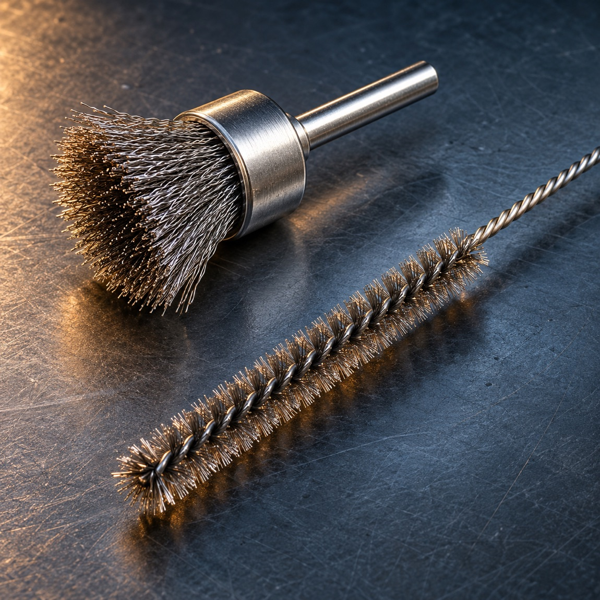

End-brush direction
For localized surface work around edges, corners, weld areas or small features where a compact brush head can reach the target.
Home / End & internal brushes
REACH & ACCESS
End and internal brush designs help focus contact into a limited area. Selection starts with access, bore or profile geometry, the material to be removed and the machine interface.
Discuss an end or internal brush
For localized surface work around edges, corners, weld areas or small features where a compact brush head can reach the target.
For bores, tubes, passages and recessed profiles. Specify the access length, opening and whether the contact is at the end, along the wall or both.
Wire or abrasive-filament directions can be reviewed according to substrate, contamination, removal goal and surface sensitivity. Confirm material compatibility before production.
ENGINEERING REVIEW
Photos, a part drawing or the existing brush help clarify access, contact and repeatability. The final configuration is agreed after application review.
| Workpiece | Material, coating or contaminant, and areas to protect |
|---|---|
| Access | Bore / opening, depth, profile and entry direction |
| Machine | Tool, spindle or fixture; interface and operating conditions |
| Brush design | Head form, reach, fill material, trim and attachment |
| Validation | Sample objective, finish target and inspection method |
Send a drawing or photo, the target operation and tool details. Operating limits and final dimensions are confirmed for the design.